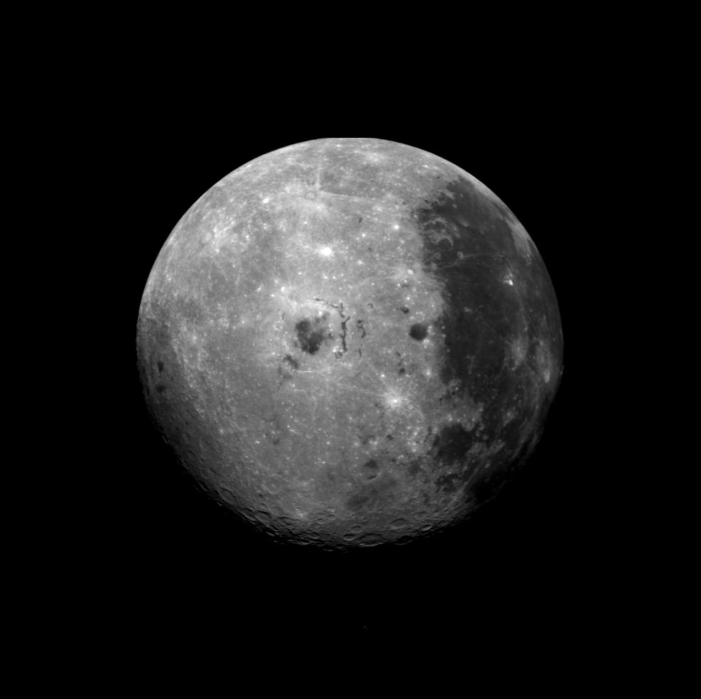
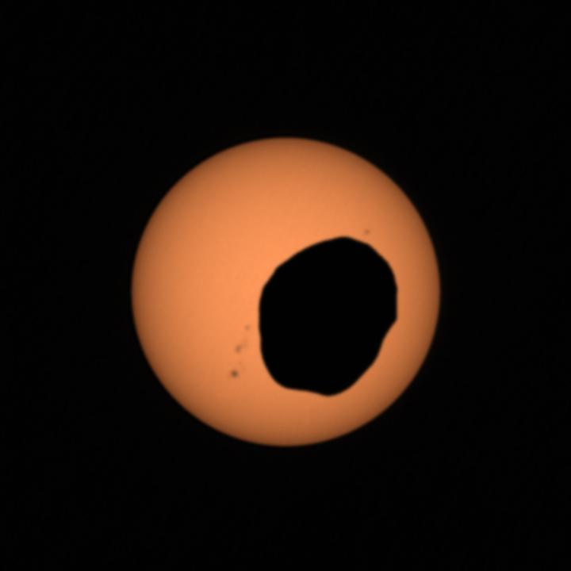
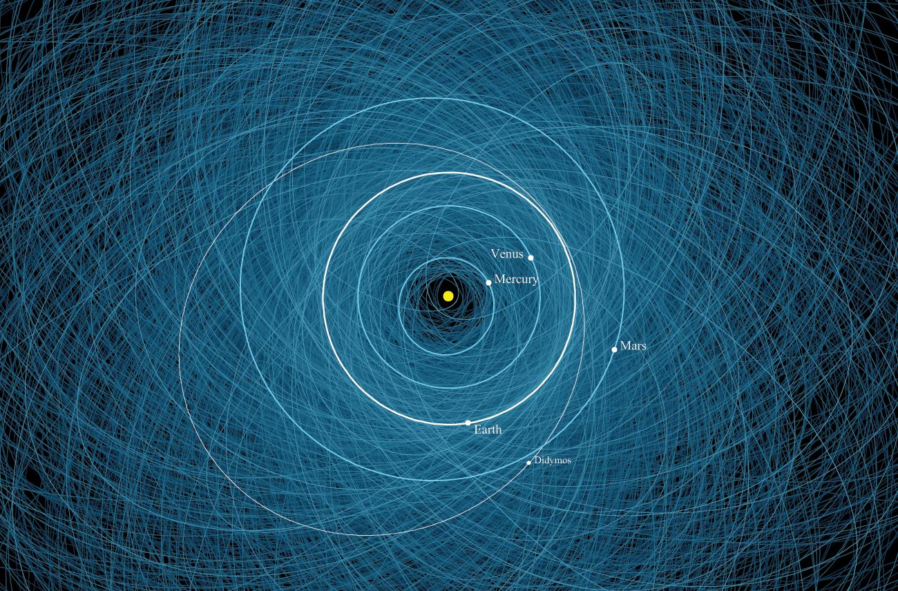
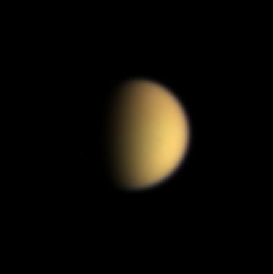

Research
RESEARCH SECTIONS
Projects, group and research data

01 / ACTIVE PROJECTS
Research projects
Studies of satellite origin, migration, ring evolution and orbital stability.
↗
02 / RESEARCH GROUP
GODS
Group of Origin and Dynamics of Satellites — the research group I lead.
↗
03 / OPEN SCIENCE
Research data
Animations and additional materials associated with selected publications.
↗
04 / MENTORSHIP
People & students
Students and researchers involved in the projects I supervise.
↗